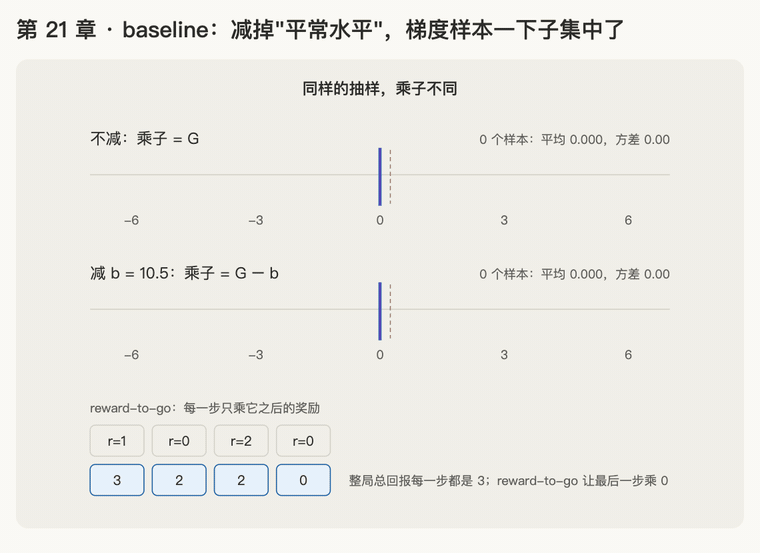
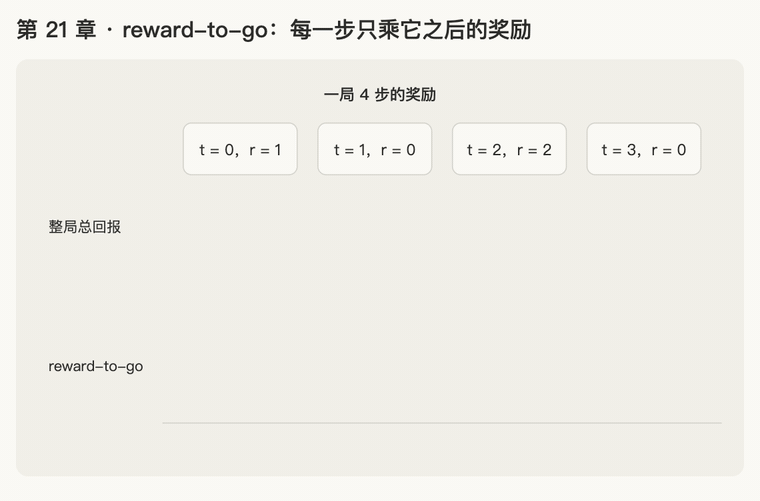

第 21 章 · baseline 与 reward-to-go：给策略梯度降噪
本章回答：REINFORCE 为什么学得这么慢？减掉一个"基准线"为什么不会把梯度弄错，却能大幅降噪？为什么一个动作只该为它之后的奖励负责？
讲解日期：2026-11-13 · 上一章：第 20 章 策略梯度与 REINFORCE · 下一章：第 22 章 Actor-Critic、优势函数与 GAE
对应原文：CS 285 第 5 讲 Part 2–3（lec-05.txtL60–L117：What is wrong with the policy gradient、Baselines L101–L111、Causality / reward to go L112–L117）；Sutton & Barto §13.4 REINFORCE with Baseline（L25595–L25741，式 13.10、13.11）
本章缩写：b = baseline（基准线）；方差 variance：一组数离它们平均值有多散（Transformer 讲义第 19 章讲过）；reward-to-go：从这一步"往后还剩"的奖励。全部缩写见 附录 · 缩写与术语表
讲解
第一步：问题：奖励全是正的，每个动作都被推高（2026-11-13）
第 20 章末尾的毛病：两台老虎机奖励都是正的，REINFORCE 不管抽到哪台都把它推高，只是好的推得多一点。
把问题放大：两台机器的平均奖励是 10 和 11（差别只有 1，但数值都很大）。
| 抽到 | 奖励大约 | 推的方向 |
|---|---|---|
| 机器 0 | 10 | 把机器 0 推高 10 个单位 |
| 机器 1 | 11 | 把机器 1 推高 11 个单位 |
每一步都在"大幅推高刚才那个"，真正有用的信息（11 比 10 多 1）只占一小部分，大部分是噪声。用代码估了 2 万个单样本梯度（只看 θ₁ 那一维）：
| 梯度平均 | 梯度方差 | |
|---|---|---|
| 不减 baseline | 0.286 | 27.85 |
真实梯度是 0.25（附录有推导），但单个样本散得很厉害（方差 27.85），要平均非常多样本才看得清方向。
CS 285 第 5 讲 L60–L78 的下棋例子：赢 +1、输 −1。你得到的往往是"开局运气好的都被奖励""后面对手失误、前面的臭棋也被奖励"。乘在 \(\nabla\log\pi\) 前面的那个数（乘子）太粗糙了。
一句话：奖励都很大时，REINFORCE 每次都把刚才的动作大幅推高，有用的差别被淹没，梯度方差很大。
第二步：baseline：只看"比平常好多少"（2026-11-13）
想法（lec-05.txt L101–L111）：不用回报 G 本身，而用"比平常好多少"：
b 是一个基准线 baseline，最简单的取法：平均回报（L111："average reward is not the best baseline, but it's pretty good!"）。
类比：考试打分。 全班平均 80 分。小明考 85，老师说"比平均高 5 分，表扬"；小红考 78，"比平均低 2 分，加油"。如果不减平均，85 和 78 都是"好高的分"，都表扬，就分不出谁好了。
老虎机上：b = 10.5（两台的平均）。
| 抽到 | G − b 大约 | 推的方向 |
|---|---|---|
| 机器 0 | 10 − 10.5 = −0.5 | 把机器 0 压低 |
| 机器 1 | 11 − 10.5 = +0.5 | 把机器 1 推高 |
现在差机器被压低、好机器被推高，方向一下清楚了。同样估 2 万个样本：
| 梯度平均 | 梯度方差 | |
|---|---|---|
| 不减 baseline | 0.286 | 27.85 |
| 减 b = 10.5 | 0.254 | 0.25 |
平均都在 0.25 附近（真实梯度），方差从 27.85 降到 0.25，小了 100 多倍。
一句话：把 G 换成 G − b（比平常好多少），好的推高、差的压低；老虎机上方差从 27.85 降到 0.25，平均不变。
第三步：减掉 baseline 为什么不会把梯度弄错（2026-11-13）
疑问（L104："but… are we allowed to do that??"）：随便减一个数，梯度不就变了吗？
关键：减掉的那一项，平均下来是 0（L109："subtracting a baseline is unbiased in expectation!"）。
一步步读：
- b 不依赖动作，可以提到外面；
- 第 20 章的"方便恒等式"反着用：\(\pi\nabla\log\pi = \nabla\pi\)；
- 所有动作的概率加起来永远是 1（第 4 章）；
- 常数 1 的导数是 0。
白话：概率总和永远是 1，你把一个动作推高，别的就得降；"所有动作一起推高 b"这件事，平均下来等于什么都没做。Sutton & Barto 式 13.10（L25601–L25620）说的是同一件事："baseline 可以是任何函数，只要它不随动作 a 变化"。
用数字验证：θ = [0, 0]，π = [0.5, 0.5]，b = 10.5。
- 抽到机器 0（概率 0.5）：\(b\,\nabla\log\pi(0) = 10.5 \times [0.5, -0.5] = [5.25, -5.25]\)；
- 抽到机器 1（概率 0.5）：\(10.5 \times [-0.5, 0.5] = [-5.25, 5.25]\)；
- 平均：\(0.5 \times [5.25, -5.25] + 0.5 \times [-5.25, 5.25] = [0, 0]\) ✓。
所以减掉 b，期望不变（不改变方向），只改变每个样本的大小（降低方差）。
一句话：\(\mathbb{E}[b\nabla\log\pi] = b\nabla\sum\pi = b\nabla 1 = 0\)；baseline 只要不随动作变，就不改变梯度的期望，只降方差。
第四步：reward-to-go：一个动作只为它之后的奖励负责（2026-11-13）
多步任务里还有一个浪费：第 20 章的公式里每个时刻 t 乘的是什么回报？如果乘的是整局的总回报，那么第 5 步的动作也要为第 1 步拿到的奖励"负责"。
但第 5 步的动作不可能影响第 1 步的奖励：那时它还没发生。这叫因果性 causality（lec-05.txt L112–L117）。
修法：reward-to-go（往后还剩的奖励）：时刻 t 只乘"从 t 往后"的奖励之和：
这就是第 2–3 章的 \(G_t\)！用数字算：一局 4 步的奖励是 [1, 0, 2, 0]：
| 时刻 t | 整局总回报 | reward-to-go |
|---|---|---|
| 0 | 3 | 1 + 0 + 2 + 0 = 3 |
| 1 | 3 | 0 + 2 + 0 = 2 |
| 2 | 3 | 2 + 0 = 2 |
| 3 | 3 | 0 |
第 3 步的动作之后什么奖励都没有，乘的是 0：它对这局的结果没贡献，就不该被推高。用整局总回报时，它也被推高了 3，这完全是噪声。
和 baseline 一样，也不改变期望：过去的奖励和现在的动作无关，那部分乘上 \(\nabla\log\pi\) 平均下来是 0（同第三步的道理）。所以 reward-to-go 也是"只降方差、不改方向"。
两招合起来（lec-05.txt L142 的代码注释："q_values … with baseline subtracted"）：
这就是 CS 285 HW2 §3–§4 要实现的东西（命令行开关 --use_reward_to_go、--use_baseline；starter 里的函数是 pg_agent.py 的 _discounted_reward_to_go、_estimate_advantage）。
更好的 baseline：b 不一定是一个常数。让 b 随状态变：\(b(s) = \hat v(s)\)，用第 17 章的函数近似学一个价值网络当 baseline，效果更好（式 13.11，L25624–L25640）。这一步把我们带到下一章的 Actor-Critic。
一句话：reward-to-go 让时刻 t 只乘它之后的奖励（就是 \(G_t\)），也不改期望、只降方差；再减一个随状态变的 baseline \(\hat v(s)\)，就到了 Actor-Critic。
动画演示：减掉 baseline 前后，梯度样本散得多厉害

可交互版：animations/l21-baseline.html（要能点按钮、拖滑块，需要用本地服务打开，见 animations/README.md"跑起来看"）。
怎么看：
- 两台机器平均奖励 10 和 11；每帧抽一个动作，算一个单样本梯度，画成一个点；
- 上面一排点不减 baseline：散在 −5 到 +6 之间（第一步）；下面一排减了 b = 10.5：挤在 ±0.5 附近（第二步）；
- 两排的竖线是到目前为止的平均，都慢慢靠到真实梯度 0.25（第三步：期望不变）；
- 滑块调 b：b = 0 最散，b 接近 10.5 最集中；右下角是一局 [1, 0, 2, 0] 的 reward-to-go 演示（第四步）。
动画演示 2：reward-to-go 倒着加（第四步）

可交互版：animations/l21b-reward-to-go.html（无滑块，用 → 单步）
怎么看：
- 奖励 [1, 0, 2, 0]，从最后一步往前加：0 → 2 → 2 → 3，就是第四步表格的 reward-to-go 一列。
- 最后一帧对比：整局总回报每一步都乘 3；reward-to-go 让 t = 3 的动作乘 0（标红），因为它之后没有奖励。
练习与作答记录
题 1：三台机器平均奖励 20、21、22，你会选什么当 baseline？抽到平均 20 的那台时，G − b 大约是正还是负？它的概率会被推高还是压低？
作答：（待作答）
题 2：π = [0.2, 0.8]（两个动作），b = 5。分别算 \(b\,\nabla\log\pi(0)\) 和 \(b\,\nabla\log\pi(1)\)（用 one-hot − π），再按概率加权平均，验证结果是 0。
作答：（待作答）
题 3：一局 5 步的奖励是 [0, 0, 0, 0, 1]。写出每一步的 reward-to-go（不打折）。和"每一步都乘整局总回报"相比，这里有没有区别？为什么？
作答：（待作答）
口诀
奖励全是正的，每个动作都推高，信号淹没在噪声里；
减个 baseline：只看比平常好多少，好的推高差的压低；
概率加起来是一，导数是零，所以减 b 不改方向只降噪；
动作只管身后事：reward-to-go 就是 \(G_t\)；b 随状态变就是价值网络。
本章复习卡片
- R36（baseline：用 \(G - b\) 代替 G；为什么无偏：\(\mathbb{E}[b\nabla\log\pi] = b\nabla\sum_a\pi = 0\)）
- R37（reward-to-go：时刻 t 只乘它之后的奖励；[1, 0, 2, 0] → [3, 2, 2, 0]；两招都只降方差）
附录 · 延伸阅读
留给以后深入学习用，不影响本章主线。★ 是建议先读的。
推荐阅读
| 读什么 | 读哪里 | 读它为了什么 |
|---|---|---|
| ★ CS 285 第 5 讲 Part 2–3 | cs285-slides/lec-05.txt L60–L160 |
下棋的例子、Baselines、Causality / reward to go、PyTorch 实现片段（L142 起） |
| ★ Sutton & Barto §13.4 | books/sutton-barto-RLbook2020.txt L25595–L25741（式 13.10、13.11，算法框 L25657） |
REINFORCE with Baseline；图 13.2 加 baseline 后学得快多少 |
| Spinning Up | spinningup/docs/spinningup/rl_intro3.rst 的 "Don't Let the Past Distract You"、"Baselines in Policy Gradients" 两节 |
reward-to-go 和 baseline 最清楚的推导 |
| CS 285 HW2 | cs285-homeworks/hw2.txt §2.2–§2.3（L70–L239）、§3–§4（L240–L382） |
reward-to-go、advantage 归一化、神经网络 baseline 的实验与交付项 |
| CS 285 第 6 讲 | lec-06.txt L22–L47 |
"What about the baseline?"：把 baseline 换成状态价值，进入 actor-critic |
数学原理
- baseline 无偏：\(\mathbb{E}_{a\sim\pi_\theta}[b(s)\nabla\log\pi_\theta(a \mid s)] = b(s)\nabla\sum_a\pi_\theta(a \mid s) = 0\)，只要 b 不依赖 a。
- 真实梯度（老虎机）：\(\nabla_{\theta_1}J = \sum_a \pi(a)q(a)(\mathbb 1[a=1] - \pi(1)) = 0.5 \times 11 \times 0.5 + 0.5 \times 10 \times (-0.5) = 0.25\)。
- 方差为什么变小：单样本梯度 \((G - b)\nabla\log\pi\) 的二阶矩里有一项 \(b^2\) 级别的大数；b 取在 G 的"中间"时这一项最小。最优 baseline 是 \(b^* = \frac{\mathbb{E}[G\,\lVert\nabla\log\pi\rVert^2]}{\mathbb{E}[\lVert\nabla\log\pi\rVert^2]}\)（令方差对 b 的导数为 0 得到），实践中直接用平均回报或价值网络。
- reward-to-go 无偏：对 \(t' < t\)，\(\mathbb{E}[r_{t'}\nabla\log\pi(a_t \mid s_t)] = 0\)（\(r_{t'}\) 在 \(a_t\) 之前已经确定，按 \(a_t\) 平均时同第一条）。
- advantage 归一化：HW2 里还会把一批 \(\hat Q - b\) 减均值、除标准差（Transformer 讲义第 19 章 LayerNorm 同一个操作），进一步稳定步长。
公式清单
| 公式 | 意思 |
|---|---|
| \(\theta \leftarrow \theta + \alpha(G - b)\nabla\log\pi_\theta(A \mid S)\) | 带 baseline 的 REINFORCE（式 13.11） |
| \(\mathbb{E}[b\nabla\log\pi] = 0\) | baseline 不改变期望 |
| \(\hat Q_t = \sum_{t'=t}^{T}\gamma^{t'-t}r_{t'}\) | reward-to-go（就是 \(G_t\)） |
| \(\nabla J \approx \frac1N\sum_i\sum_t\nabla\log\pi(a_{i,t} \mid s_{i,t})(\hat Q_{i,t} - b(s_{i,t}))\) | 两招合用 |
代码对照：把本章的数字用代码算一遍
代码在
cs285-deep-rl/solutions/chapter-code/ch21_baseline.py，测试tests/test_ch17_24.py（检查方差至少降 50 倍、平均基本不变）。
同一章的 Jupyter notebook：cs285-deep-rl/solutions/chapter-code/notebooks/ch21_baseline.ipynb（讲解和代码放在一起，一格一格边读边跑；代码都写在格子里，Colab 也能直接打开）。
bash cd cs285-deep-rl/solutions/chapter-code uv run python ch21_baseline.py
| 讲义 | 代码 | 跑出来 |
|---|---|---|
| 不减 baseline，2 万个样本 | grad_samples(0.0) |
平均 0.286，方差 27.85 |
| 减 b = 10.5 | grad_samples(10.5) |
平均 0.254，方差 0.25 |
| reward-to-go | reward_to_go([1, 0, 2, 0]) |
[3, 2, 2, 0] |
关键几行：
out.append((G - baseline) * grad_log_softmax(theta, a)[1]) # 一个单样本梯度
for r in reversed(rewards): G = r + gamma * G # reward-to-go：又是第 3 章那个倒着推的循环
代码里才看得到的：reward_to_go 和第 3 章的 returns_backward、第 14 章 MC 的倒着走是同一段代码。CS 285 HW2 的 _discounted_reward_to_go 也长这样。
自己改一改（不影响练习答案）：
- 换 baseline：
grad_samples(b)，b = 5 → 方差 7.83；b = 10.5 → 0.25；b = 20 → 22.78。平均值都在 0.25 左右（不偏），方差在 b 接近平均奖励时最小。 reward_to_go([1, 0, 2, 0], 0.9)→ [2.62, 1.8, 2.0, 0.0]：加上折扣，就是第 3 章倒着推的那个循环。